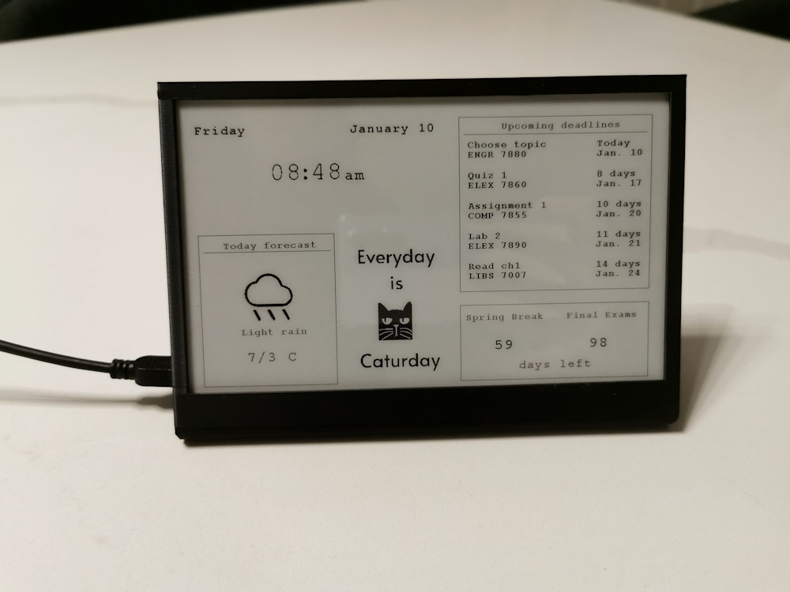

Overview
I love using the widgets on my phone but they get buried under a sea of apps and pages. To help manage that, I created Alertly, a productivity-focused device designed to provide quick, accessible reminders conveniently on the workspace. With a dedicated display, it features essential widgets like a clock, calendar, to-do list, and countdown timer. The goal is to keep organized and mindful of time, decreasing distractions often caused by apps and multiple open pages on your phone. Alertly is powered by 7.5’’ e-paper display and ESP32 microcontroller with build in Wifi, all programmed on Arduino IDE.
Concept
Alertly is an interactive desk display powered by ESP32, fetching real-time data from APIs (like Notion) to keep users organized.
- Interactive Widgets: Countdown timers, to-do lists, and deadline trackers for real-time task management.
- ESP32 Integration: Keep connected to Wifi to get the most up to date data.
- Responsive UI: A user-friendly interface that updates in real time, enhancing productivity.
- Custom Enclosure: Sleek, functional housing using SolidWorks, keeping the design clean and practical.
Achievements
- Managed pixel-based layout by using variable offsets, allowing for easier adjustment and dynamic shifting of widgets.
- Designed a modular PCB with incremental testing using an external ESP32 and test pins, enabling faster troubleshooting and efficient integration.
- Optimized large payload parsing from APIs with ArduinoJson, boosting efficiency and reducing processing time.
- Simplified debugging by modularizing code into two main classes for data and display management.
Progress
Currently, Alertly enhances productivity by offering a calendar, to-do-list, weather and countdowns. Future upgrades would include: adding alarm and timer with neopixel leds and an encoder.
